中文名
身高
外文名
出生日期
别名
职业
国籍
血型
民族
代表作品
星座
主要成就
小学期间，1995年至1999年连续五年被评为北京市“三好学生”，1997年被授予“北京市红领巾奖章”，同年荣获北京市”十佳好少年”称号。 中学期间，就读北京市育英中学，曾经连续三次在年度大考中获得年级第一，且一直保持全年级数学第一的纪录 。 高中期间，舒畅白天拍戏，晚上在随身老师的指导下学习。2003年6月，刚高二的舒畅就参加了高考，并以520分被中央戏剧学院表演系录取，但未去。2004年2月至5月，高考复习期间，舒畅参与了电视剧《宝莲灯》的拍摄，此间她又要准备高考又要拍戏；同年6月，舒畅再次参加了高考，在此之前，很多人都鼓励舒畅考北京电影学院或中央戏剧学院，最后舒畅还是选择了一所与表演无关的普通大学。
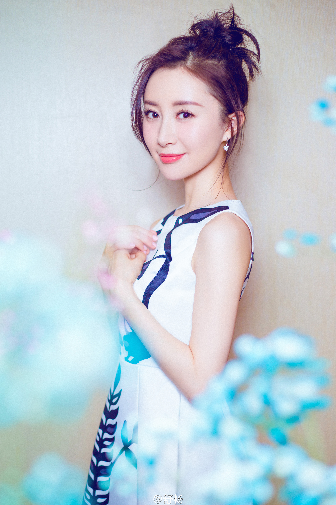 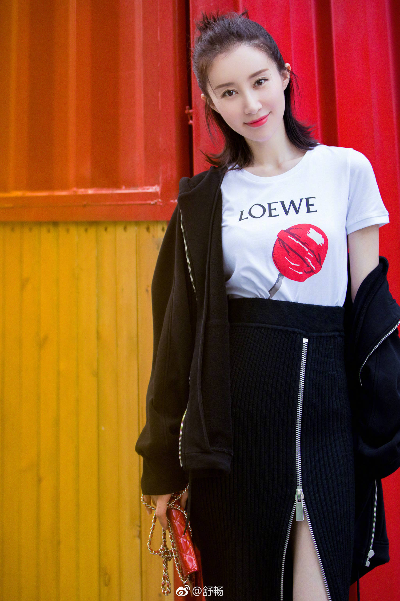 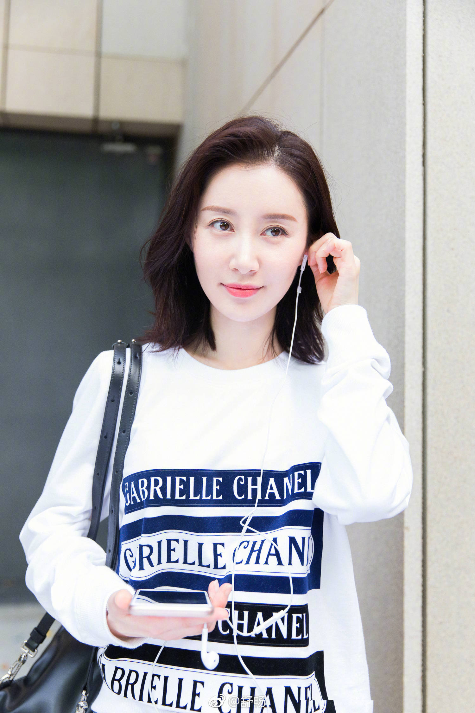1992年，5岁的舒畅就开始接触影视，因其在北京一家照相馆里的一张照片被导演发现而后被邀请出演电视剧《我的故事》中女主角童年，开启了演艺生涯；同年，又被电影《小巷情深》的导演选中，客串一个小角色
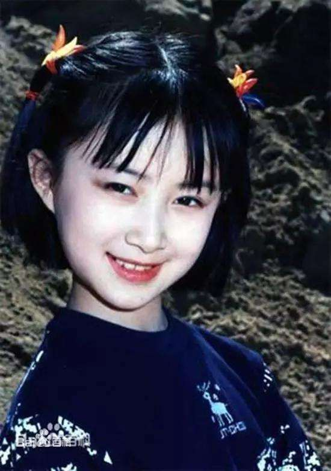1994年12月，7岁的舒畅参加了中央电视台首届“中日青少年歌手大赛友好歌唱大赛”，演唱歌曲《送别》 获得铜奖。
1995年3月，舒畅获得广电部颁发的“金童奖”。6月，舒畅应邀到日本参加东京电视台的大型文艺晚会”亚洲儿童手牵手“，演唱《妈妈，早上好》。9月，舒畅应邀赴台湾主持“海峡两岸儿童心连心”文艺晚会。同年，舒畅参演电影《舞女。1995年，舒畅还拍摄了 舒畅童年MTV、专辑图片 反映90年代三峡移民建设的童谣《雀尕飞》的MTV，该作品获“第三届中国音乐电视大赛”金奖，1996年获中宣部全国精神文明建设第五届“五个一工程”入选作品奖
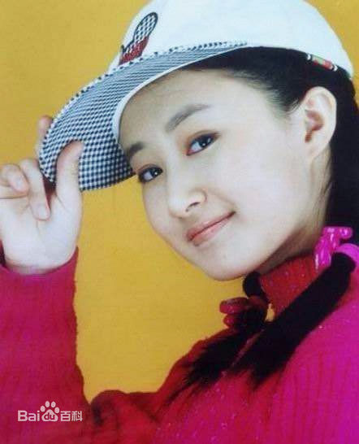1996年，舒畅演唱并拍摄的MTV《放学路上》获得了首届”中国儿童音乐电视大赛“铜奖。同年，舒畅主持了中央电视台《大风车》栏目。
1997年，舒畅出演了电视剧《单亲之家》，饰演的小辣椒受到观众喜爱，至此小舒畅成为了炙手可热的童星。同年，10岁的舒畅发行了自己的首张个人专辑《少了妈妈只有半个家，专辑同名歌曲为电视剧《单 1992~2000 舒畅童年影视 剧照 亲之家》的片尾曲，专辑首发销量超过10万张，在音乐界引起轰动。同年，舒畅与国家一级演员李媛媛合作拍摄了情感电视剧《好好过日子》。
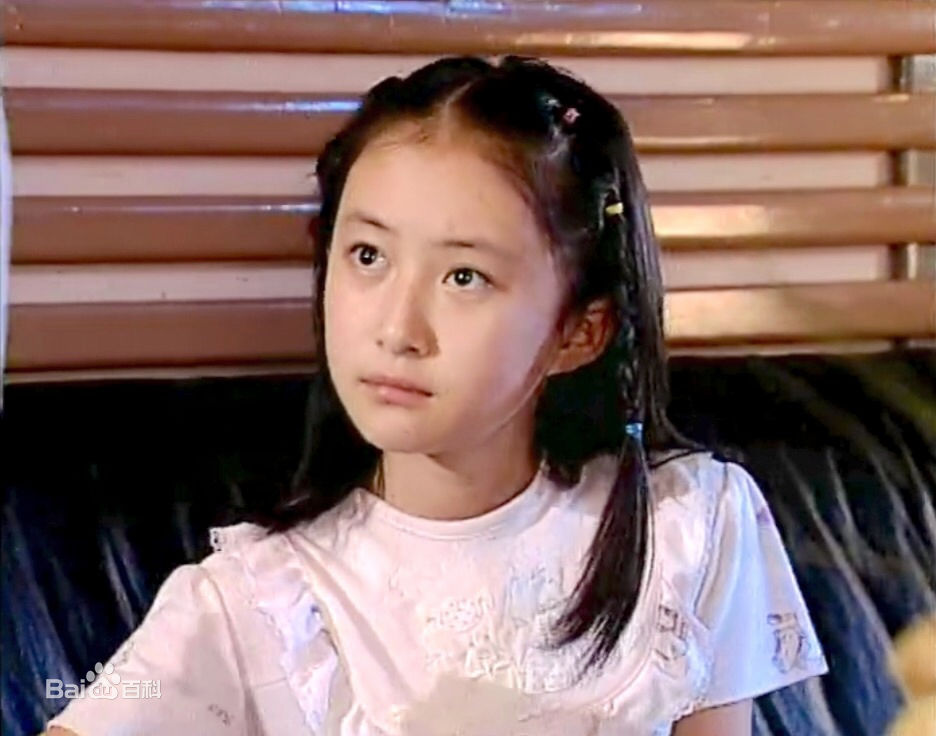1998年，舒畅出演年代剧《小凤仙的故事》，在剧中扮演童年小凤仙。同年，舒畅担任《小神龙俱乐部》主持人
1999年10月，参加全国有线台“庆祝中华人民共和国成立五十周年”文艺晚会 。1995年至2000年期间，舒畅每年都会参加一些由中央电视台、北京电视台及其他台或地区举办的“五一”“六一”“七一”“十一”等大型晚会，担任主持人，或表演独唱、小品、朗诵等。
2000年8月至2002年4月，舒畅陆续拍摄了一系列影视剧，如《皇宫宝贝》的巧月，《新女驸马》的杏儿，《欢乐情缘》的尚小云等。2001年12月，舒畅参与了中国第一部少年犯罪题材电视剧《拯救少年犯》的拍摄
2002年，舒畅为摆脱童星印象，开始参演各种类型的角色。同年4月，未满15周岁的舒畅出演了尤小刚导演的清宫剧《孝庄秘史》，该剧于2002年12月31日播出，获第21届中国电视金鹰奖长篇电视剧优秀作品奖，舒畅在剧中饰演了古典温婉的董鄂妃，受到媒体广泛关注。同年12月，舒畅获第三届中国金鹰电视艺术节电视新秀大赛“最佳电视新秀奖”。
2003年3月，参演的民国剧《金粉世家》在央视八套播出，舒畅在剧中饰演八妹金梅丽。7月，舒畅在古装戏《宫廷画师郎世宁》饰演郎世宁义女幼敏；10月，在古装喜剧 《厨子当官》 中，舒畅首次出演双胞胎； 舒畅《宝莲灯》饰 小玉 同年12月，武侠剧《天龙八部》正式在浙江卫视播出，舒畅在剧中扮演了唯我独尊的灵鹫宫宫主天山童姥，演技受到导演和观众认可。
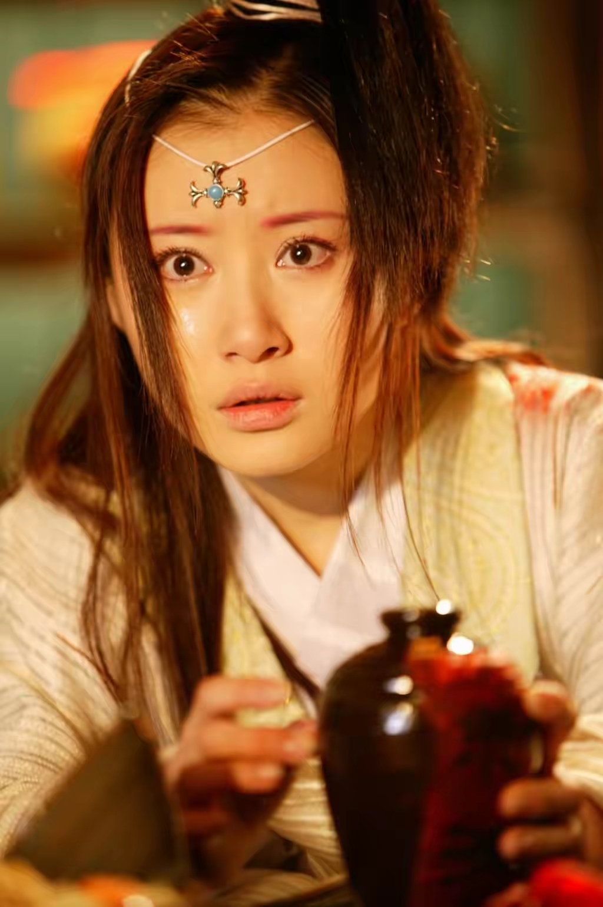2004年2月，由王新民执导的金庸武侠剧《连城诀》播出，舒畅在剧中饰演女一号水笙，此剧拍摄期间舒畅历经生死考验，一度签下“生死状”；6月，舒畅在《皇太子秘史》中饰演云格格；7月31日，古装轻喜剧《少年大钦差》首播，舒畅出演了身负血海深仇的冷艳女侠徐莲一角，准确把握这一台词较少而内心复杂的清冷角色对舒畅是一个挑战；同年9 月，舒畅主演了青春校园剧《雨季不再来》，饰演乖巧可爱的高中生孟思佳；12月，舒畅拍摄电视剧《酒后吐真言》，饰演农村女孩二妹子；同年舒畅还出演了电视剧《李卫当官2》，在剧中饰演石榴
2005年2月，主演的国内首部生肖贺岁剧《鸡祥如意》播出，舒畅分饰了星儿、月儿这对姐妹花；10月4日，由余明生执导的古装神话剧《宝莲灯》在央视八套播出，舒畅在剧中饰演小狐狸小玉，该剧平均收视达5.4%，最高收视9.1%，为当年的收视榜首之作，并获得第十一届亚洲电视大奖最佳电视剧奖等荣誉。作为该剧女一号的舒畅由此被观众熟知。
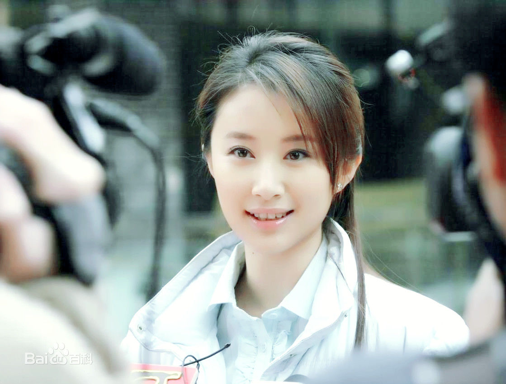2006年2月，主演情感剧《爱在来时》，在剧中饰演周静怡，素雅。3月，母爱题材现代剧《中国母亲》播出，舒畅在剧中扮演黄琳。7月，主演的魔幻题材电视剧《传奇幻想殷商》首播，舒畅在剧中饰演天真浪漫的桐瑶。
2007年3月27日，关于残疾人的电视剧《花开有声》在央视八套播出，舒畅在剧中饰演先天性精神病患月月，该剧于2010年获江苏省第7届 “五个一工程奖”；7月，舒畅主演的古装神话剧《精卫填海》在广西卫视、陕西卫视、安徽卫视、山东卫视四大卫视同时上星播出，舒畅在剧中饰演了太阳神的女儿精卫；11月，主演拍摄了反映县级市非物质文化遗产保护和发展的电视剧《红官窑》，饰演了性格泼辣的湘妹子夏芙蓉
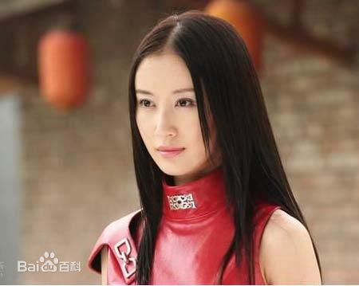2008年4月，舒畅主演的现代科幻神话剧《魔幻手机》播出，该剧以平均收视率4%、单集最高收视率5.76%的成绩创造了央视八套2008年的收视新高，舒畅在剧中饰演了来自2060年的智能手机傻妞；5月，张纪中版《新鹿鼎记》播出，舒畅挑战出演了刁蛮任性的建宁公主，演技再次获观众认可；6月，历史传奇剧《大明奇才》在央视八套播出，舒畅饰演了忠烈民女曹贞；7月，主演的都市时装商战剧《义本同心》播出。7月，主演的都市时装商战剧《义本同心》播出，舒畅在剧中饰演尚敏；8月，主演历史题材电视剧《春秋淹城》，饰演起初天真无邪而后担当大任的淹城公主罗敷，这也是舒畅扮演的第四个公主角色；9月，主演音乐题材电视剧《双城变奏》登录央视一套，舒畅在剧中分饰双胞胎姐妹唐音、汀娜两角；12月，舒畅在“腾讯星光大典”中获“年度最具突破电视演员”奖项
2009年2月19日，舒畅参加了“湖南卫视·百度娱乐沸点2008年度盘点”颁奖典礼，其主演的电视剧《魔幻手机》荣获“最热门内地电视剧”奖。 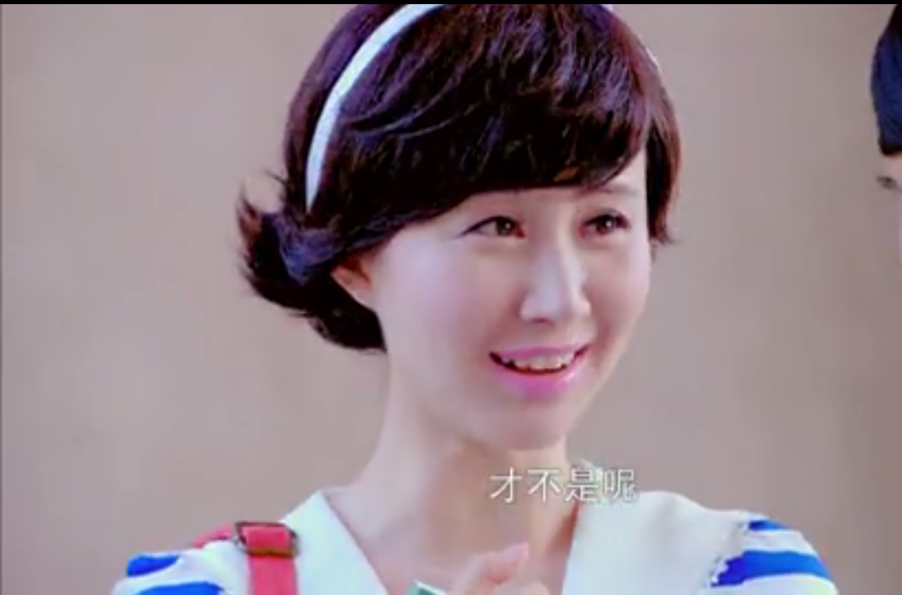8月，舒畅拍摄情感商战题材电视剧《无量天》，在剧中饰演了年龄跨度很大的陆遥想。11月，主演抗战题材剧《血战太行山》，舒畅在剧中分饰一对姐妹花——优秀八路军干部郝喜娥、有勇有谋的土匪郝喜兰。
2010年3月，主演电视剧《阳新鞋匠》，在剧中饰演智力障碍的欧宝妹；6月，主演古代传奇剧《刘三姐》，在剧中饰演壮族歌仙刘三姐 ；7月，参演的红色剧《江姐》登陆央视一套黄金档，舒畅在剧中饰演女特务文娟
2012年1月，舒畅在新版《西游记》中饰演女儿国国王；1月20日，清宫剧《宫锁珠帘》在湖南卫视播出，舒畅在剧中第六次饰演双胞胎，挑战出演了一对孪生姐妹——狠辣娇纵的云嫔娘娘和善良妖娆的牡丹姑娘，性格迥异的两个角色使得舒畅的演技获得好评，该剧以平均收视10.15，创造了至2012年中国大陆古装剧在台湾播出的最高收视；同时，舒畅还与袁姗姗，张嘉倪共同演唱了该剧的插曲《相思曲；5月，舒畅在古装魔幻剧《赏金猎人》中客串出演清纯魅惑的神秘女
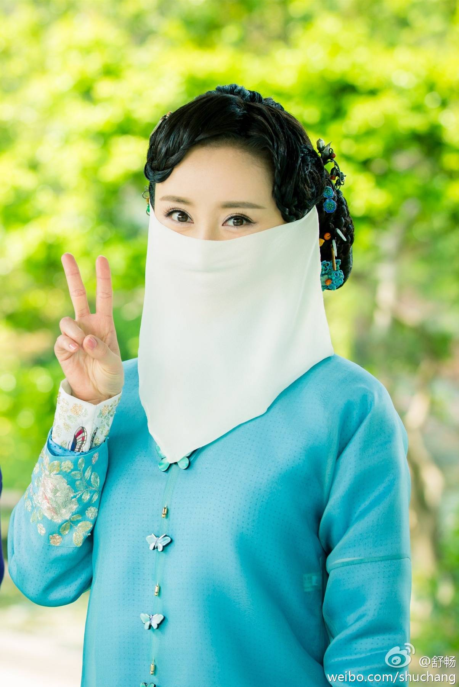2013年12月，舒畅主演的年代情感剧《烽火佳人》播出，舒畅在剧中饰演皇族后裔佟毓婉，该剧为安徽卫视2013年度收视冠军，并获得第二十届上海电视节暨白玉兰奖“最受关注电视剧奖”
2014年2月，主演的《魔幻手机2傻妞归来》登陆央八黄金档，舒畅在剧中出演了来自2060年的智能手机机器人傻妞和傻妞九号，这也是舒畅第七次在一部剧中饰演两个角色。
2015年2月，参演的民国偶像剧《活色生香》开播，舒畅在剧中饰演调香大师小雅惠子，该剧开播全国网收视率达3.43，打破截止2015年近十年电视剧的首播收视纪录
2016年，舒畅签约舒畅工作室。2016年4月，主演的古装权谋虐恋电视剧《乾隆秘史》在爱奇艺独家播出，舒畅在剧中饰演了“病如西子多三分”的才女林颦颦；7月31日，电视剧《诛仙青云志》播出，舒畅在剧中特别出演了拥有着绝世容颜的九尾天狐小白；10月17日，友情出演的古装轻喜剧《欢喜密探》上线播出。11月5日，主演的年代悬疑剧《心如铁》首播，舒畅在剧中扮演了一位人物命运几经波折的女英雄——小苹果
2017年1月29日，古装剧《大唐荣耀》于北京卫视、安徽卫视播出，舒畅在剧中饰演神医王妃——慕容林致，演技受到好评；2月9日，古装历史剧《天下拍摄，舒畅在剧中出演一代贤后——长孙皇后；5月8日，清装传奇剧《龙珠传奇》在北京卫视、安徽卫视播出，舒畅在剧中一人分饰两角，长安》开机一为大臣之女舒婉心，另一个则是明珠谷大师姐雪倾城。7月31日，舒畅主演的都市生活轻喜剧《我的早更女友》开机拍摄，截止2017年，十年未参演现代剧的舒畅，此番一改往日古装形象，在剧中出演了华丽时髦的“早更女”戚嘉。
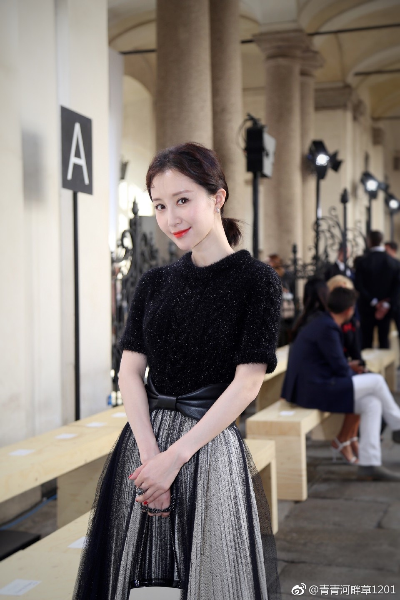 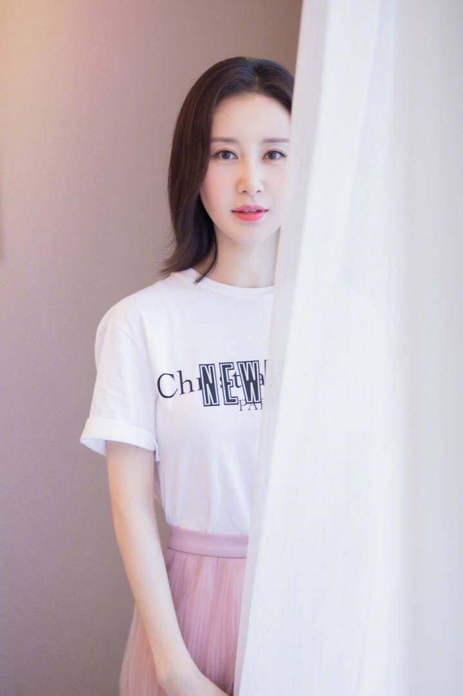 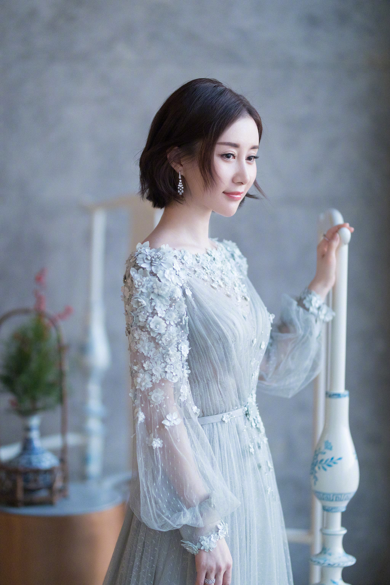2006年6月1日，舒畅前往深圳参加“天使之翼”百万助学行动，与云南 少数民族贫困学生面对面交流。
2008年10月25日，在深圳参加“蓝色盛典”，舒畅将个人珍藏的项链进行拍卖，募得善款22万元。
2009年5月27日，舒畅身着汉服，参加“汉符”文化工作室举办的汉服端午节文化活动。在活动现场，舒畅亲自包粽子。
2012年4月22日，舒畅出席“2012四川卫视中国爱盛典”，主办方向她颁发了“中国爱公益明星志愿者”的荣誉奖杯。
2016年8月30日，舒畅助力中国扶贫基金会，直播推介雅安灾区猕猴桃。
舒畅5岁便成为摄影师的捕捉对象，灵气逼人，镜头感出奇地好，出众的气质中有种女孩特有的温柔、娴雅和沉静。十几岁的花季年龄，却能够有张有驰、出人意料地将《孝庄秘史》中的董鄂妃演绎得丝丝入扣，令人叹服（腾讯娱乐评）
舒畅演技好，堪称努力型好演员，人品也特别好，没有绯闻，长相美丽，每部作品都非常用心。在电视剧《宫锁珠帘》中，舒畅演技大爆发，一人分饰两角，把牡丹和海棠完完全全地演出了两种感觉，尤其是海棠这个色突破了以往的形象，将一个手段狠毒的妃嫔演绎的淋漓尽致（央广网评论）
舒畅红得很真实、很实在也很低调。她有演技，有观众缘（西安文明网评）
童星出道的舒畅，一直都是观众心中的“实力演技派”。在《大唐荣耀》中，无论是友情戏还是爱情戏，舒畅都演绎出了角色内心的真性情，演技自然生动，是该剧中的一大亮点（腾讯娱乐评）
舒畅会去和其他演员沟通对角色的理解，对戏的要求和认真态度超越了很多同年龄段的演员。